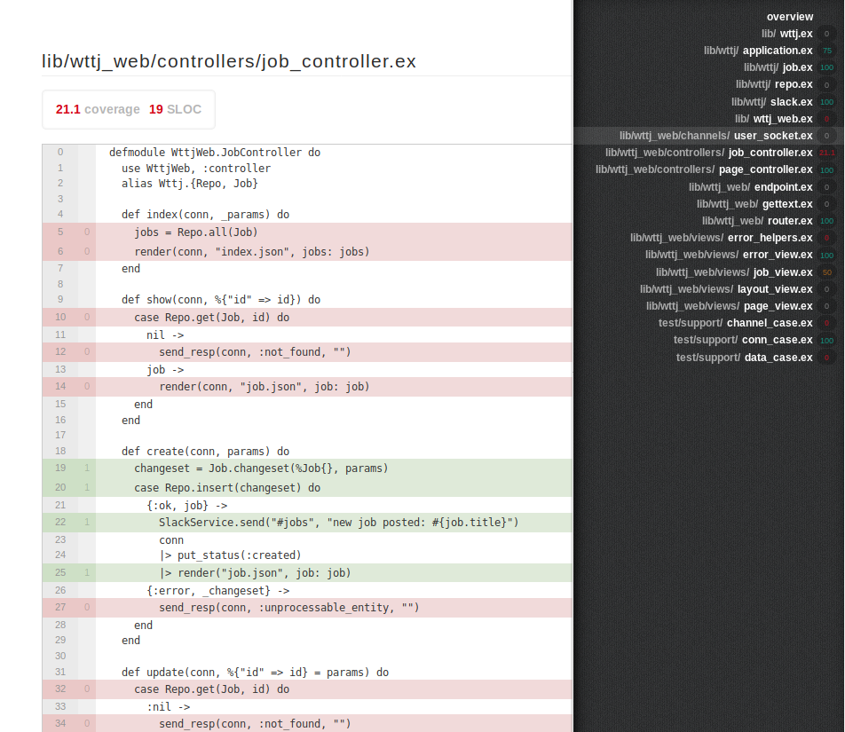

1. Introduction
After a little reminder about unit testing and Test-Driven Development, I will share in this article some useful tips when doing TDD.
How to isolate your code to ease unit testing? Focus on the currently tested functionality, simulate external entities behavior, refactoring and so on.
Then I’ll deal with one important thing that is often not tested: database migration rollback.
Next I’ll show you how code coverage could prevent you from omitting testing some important parts of your code.
Finally, I’ll give you an overview of Property-Based Testing, a new way of writing tests that can be a good complement to unit tests.
This article will not cover other type of tests (end-to-end, functional…) or other xDD techniques (Behavior DD, Domain DD, Postman DD…).
2. Unit tests and the basics of TDD
Let’s begin with a little reminder: what is a unit test?
Unit tests enable to:
-
test a small chunk of code (a module, a class, a function)
-
check some inputs vs expected output (examples)
-
quickly discover regressions
-
can serve as documentation
The most natural way when developing a feature is to code it and then add unit tests. Test Driven Development (aka TDD) is a unnatural way of writing unit tests. The steps are as follow:
-
write a unit test to meet a requirement
-
check that your test fails
-
write the code
-
check that your test succeeds
…and then you iterate until having met all requirements. During this process, as the code grows, it is also essential to refactor code.
There are several advantages of processing that way.
You don’t write more code than you really need: when writing code first, you often tend to start with a complex architecture which is
actually useless for the actual needs.
You don’t forget any requirement as you iterate over them.
You can be confident that code refactoring does not break anything.
The different parts of your code are loosely coupled, they offer clean interfaces by design. And finally, your productivity is increased.
You could be skeptical regarding the last statement. After several years of TDD, I’m convinced that I would have spent more time debugging an issue in production than the time needed to write one more unit test during the initial development phase that could have enlightened the issue.
TDD has also several trade-offs you should be aware of.
The number of lines of code can quickly grow and end up with having more lines than your actual code. Therefore choose carefully your examples and refactor your tests (yeah, tests should be refactored too).
Tests could be hard to maintain: make your tests as small as possible and add some comments around the non trivial parts, pay attention to race conditions and tests that randomly fail, clean resources that were created during tests to avoid any interference between tests.
Finally, introducing tests mean a longer continuous integration & delivery process, if the tests of your project take too much time too execute, consider taking some time to fix this issue (refactoring, delete less relevant tests).
3. Dealing with the outside world
It often occurs that you want to unit test a piece of code that makes calls to external modules/functions and you don’t want the later ones to interfere with your tests.
Let’s take the example of a job controller where a message is automatically posted in a Slack channel upon successful creation:
defmodule WttjWeb.JobController do
use WttjWeb, :controller
alias Wttj.{Repo, Job}
def create(conn, params) do
changeset = Job.changeset(%Job{}, params)
case Repo.insert(changeset) do
{:ok, job} ->
Slack.send("#jobs", "new job posted: #{job.title}")
conn
|> put_status(:created)
|> render("job.json", job: job)
{:error, _changeset} ->
send_resp(conn, :unprocessable_entity, "")
end
end
defmodule Slack do
use Tesla
plug Tesla.Middleware.BaseUrl, Application.get_env(:wttj, :slack)[:base_url]
plug Tesla.Middleware.JSON
def send(channel, message) do
post!("/", %{"channel" => channel, "username" => "WTTJ bot", "text" => message})
end
end
Here is a unit test for the job controller:
defmodule WttjWeb.JobControllerTest do
use WttjWeb.ConnCase
setup %{conn: conn} do
{:ok, conn: put_req_header(conn, "accept", "application/json")}
end
test "POST /", %{conn: conn} do
attrs = %{"title" => "Backend Engineer",
"description" => "Full-time, based in Paris",
"status" => "published"}
conn = post(conn, Routes.job_path(conn, :create), attrs)
assert json_response(conn, 201)
end
end
When you’re writing unit tests for the job controller, you don’t want to actually post a message on Slack every time the test is run. Our Slack module must be tested independently.
I’ve put a bang in the Slack module to make it crash on purpose when running the job controller test while there’s a connectivity problem with Slack.
$ mix test test/wttj_web/controllers/job_controller_test.exs
1) test POST / (WttjWeb.JobControllerTest)
test/wttj_web/controllers/job_controller_test.exs:13
** (Tesla.Error) :econnrefused (POST /)
code: conn = post(conn, Routes.job_path(conn, :create), attrs)
stacktrace:
(tesla) lib/tesla.ex:300: Tesla.execute!/3
(wttj) lib/wttj_web/controllers/job_controller.ex:23: WttjWeb.JobController.create/2
(wttj) lib/wttj_web/controllers/job_controller.ex:1: WttjWeb.JobController.action/2
(wttj) lib/wttj_web/controllers/job_controller.ex:1: WttjWeb.JobController.phoenix_controller_pipeline/2
(wttj) lib/wttj_web/endpoint.ex:1: WttjWeb.Endpoint.instrument/4
(phoenix) lib/phoenix/router.ex:275: Phoenix.Router.__call__/1
(wttj) lib/wttj_web/endpoint.ex:1: WttjWeb.Endpoint.plug_builder_call/2
(wttj) lib/wttj_web/endpoint.ex:1: WttjWeb.Endpoint.call/2
(phoenix) lib/phoenix/test/conn_test.ex:235: Phoenix.ConnTest.dispatch/5
test/wttj_web/controllers/job_controller_test.exs:17: (test)
Finished in 0.1 seconds
1 test, 1 failure
Randomized with seed 522928
You can see that an error that occurred outside the module being tested makes the test fail. This is why it’s very important to isolate your module.
To perform this isolation, you must introduce a test double.
In this article, Martin Fowler defines a test double as "generic term for any case where you replace a production object for testing purposes" and the main types: dummy, fake, stubs, spies and mocks.
For our example I will focus on using a stub, also called "mock as a noun" by José Valim in this post.
A stub is an alternate implementation of a given functionality. Its code differs from the one used in production and provides a canned response.
In our case we will use a different implementation of the Slack module depending on the environment.
The easiest way of doing that is to set the module to be used according to the Mix environment (dev, test, prod…).
config :wttj, :slack, module: Slack, base_url: "https://hooks.slack.com/services/foobar"
config :wttj, :slack, module: SlackStub, base_url: "http://localhost"
This way, Slack module will be used in production and SlackStub in tests.
The stub module does nothing, it merely returns :ok.
We introduce a new module named SlackService which acts as a router to the relevant module.
The new code looks like this:
defmodule Slack do
use Tesla
plug Tesla.Middleware.BaseUrl, Application.get_env(:wttj, :slack)[:base_url]
plug Tesla.Middleware.JSON
def send(channel, message) do
post!("/", %{"channel" => channel, "username" => "WTTJ bot", "text" => message})
end
end
defmodule SlackStub do
def send(_channel, _message) do
:ok
end
end
defmodule SlackService do
@slack_module Application.get_env(:wttj, :slack)[:module]
def send(channel, message) do
@slack_module.send(channel, message)
end
end
In the job controller, we now make a call to SlackService instead of Slack.
defmodule WttjWeb.JobController do
use WttjWeb, :controller
alias Wttj.{Repo, Job}
def create(conn, params) do
changeset = Job.changeset(%Job{}, params)
case Repo.insert(changeset) do
{:ok, job} ->
SlackService.send("#jobs", "new job posted: #{job.title}")
conn
|> put_status(:created)
|> render("job.json", job: job)
{:error, _changeset} ->
send_resp(conn, :unprocessable_entity, "")
end
end
This way, the job controller module is completely isolated and can be tested with confidence.
$ mix test test/wttj_web/controllers/job_controller_test.exs . Finished in 0.06 seconds 1 test, 0 failures Randomized with seed 492140
What about testing the Slack module itself?
We could adopt the same strategy and create a stub for the Tesla module: a module that wouldn’t actually perform HTTP calls but merely return a fake HTTP responses. Yet your test will be too much tightened with the HTTP client library you chose, here Tesla. A well-written test should not change if you decide one day to switch to another HTTP client library than Tesla.
Let me introduce the bypass library that will start a dummy web server on free port and will act in our case as the Slack server.
Remove the bang in the Slack module to nicely handle errors:
defmodule Slack do
use Tesla
plug Tesla.Middleware.BaseUrl, Application.get_env(:wttj, :slack)[:base_url]
plug Tesla.Middleware.JSON
def send(channel, message) do
case post("/", %{"channel" => channel, "username" => "WTTJ bot", "text" => message}) do
{:ok, %Tesla.Env{status: status}} when status in 200..299 ->
:ok
_ ->
:error
end
end
end
As you can see the remote url is stored in a configuration. During tests, we will dynamically set the relevant value according to the port bypass is listening to. We will then be able to simulate Slack server behaviors: nominal case, connectivity error, bad requests and so on. Very convenient!
The test looks like this. Notice no reference to Tesla at all!
defmodule SlackTest do
use ExUnit.Case, async: true
setup do
bypass = Bypass.open
config = Application.get_env(:wttj, :slack)
|> Keyword.merge([base_url: "http://localhost:#{bypass.port}"])
Application.put_env(:wttj, :slack, config)
{:ok, bypass: bypass}
end
test "nominal case", %{bypass: bypass} do
Bypass.expect bypass, "POST", "/", fn conn ->
Plug.Conn.resp(conn, 200, "")
end
assert Slack.send("my_channel", "hello world") == :ok
end
test "server downtime", %{bypass: bypass} do
Bypass.expect bypass, "POST", "/", fn conn ->
Plug.Conn.resp(conn, 200, "")
end
Bypass.down(bypass)
assert Slack.send("my_channel", "hello world") == :error
Bypass.up(bypass)
assert Slack.send("my_channel", "hello world") == :ok
end
test "bad request", %{bypass: bypass} do
Bypass.expect_once bypass, "POST", "/", fn conn ->
Plug.Conn.resp(conn, 400, "")
end
assert Slack.send("a_non_existing_channel", "hello world") == :error
end
end
There other types of test doubles (mock, fake) that I won’t cover in this article but it’s worth having a look at them if you don’t already know them.
The main lesson to keep in mind is that you have to keep your modules as small as possible and organize your code to facilitate module isolation and thus unit testing. Sometimes writing tests and thinking about module isolation can even help you refactor and architecture your code properly.
4. Unit Testing of database migration rollback
I’d like to tackle one topic that is rarely covered by unit tests in all the projects I’ve seen so far: the unit testing of database migration files, especially the rollback process.
Many frameworks offer the possibility of creating database migration files to keep track of the database schema history, migrate to the last step or rollback to a previous step in the history.
Unit tests always match the last schema. Migration files are implicitly tested the first time you run your migration file in development environment. Yet there is often no test about the rollback process.
When creating an Ecto migration file, the default callback to implement is change/0.
It expects to contain automatically-reversible migrations.
defmodule Wttj.Repo.Migrations.CreateJobs do
use Ecto.Migration
def change do
create table(:jobs) do
add :title, :string
add :description, :string
add :slug, :string
add :status, :string
timestamps()
end
end
endWe can check that the above migration can be rollbacked without any error:
$ mix ecto.migrate -n 1 [info] == Running 20190318203551 Wttj.Repo.Migrations.CreateJobs.change/0 forward [info] create table jobs [info] == Migrated 20190318203551 in 0.0s $ mix ecto.rollback [info] == Running 20190318203551 Wttj.Repo.Migrations.CreateJobs.change/0 backward [info] drop table jobs [info] == Migrated 20190318203551 in 0.0s
Yet, not all migrations are automatically reversible!
A good example of this kind is deleting a column. Let’s add a migration file to delete the slug column in the jobs table. The implementation will look like this.
defmodule Wttj.Repo.Migrations.RemoveJobSlug do
use Ecto.Migration
def change do
alter table(:jobs) do
remove :slug
end
end
endIn this case the rollback will fail:
$ mix ecto.migrate -n 1
[info] == Running 20190318203905 Wttj.Repo.Migrations.RemoveJobSlug.change/0 forward
[info] alter table jobs
[info] == Migrated 20190318203905 in 0.0s
$ mix ecto.rollback
[info] == Running 20190318203905 Wttj.Repo.Migrations.RemoveJobSlug.change/0 backward
** (Ecto.MigrationError) cannot reverse migration command: alter table jobs. You will need to explicitly define up/0 and down/0 in your migration
(ecto_sql) lib/ecto/migration/runner.ex:206: Ecto.Migration.Runner.execute_in_direction/4
(ecto_sql) lib/ecto/migration/runner.ex:110: anonymous fn/2 in Ecto.Migration.Runner.flush/0
(elixir) lib/enum.ex:1925: Enum."-reduce/3-lists^foldl/2-0-"/3
(ecto_sql) lib/ecto/migration/runner.ex:108: Ecto.Migration.Runner.flush/0
(stdlib) timer.erl:166: :timer.tc/1
(ecto_sql) lib/ecto/migration/runner.ex:26: Ecto.Migration.Runner.run/7
(ecto_sql) lib/ecto/migrator.ex:211: Ecto.Migrator.attempt/7
(ecto_sql) lib/ecto/migrator.ex:149: anonymous fn/4 in Ecto.Migrator.do_down/4
(ecto_sql) lib/ecto/migrator.ex:193: anonymous fn/3 in Ecto.Migrator.run_maybe_in_transaction/5
(ecto_sql) lib/ecto/adapters/sql.ex:820: anonymous fn/3 in Ecto.Adapters.SQL.checkout_or_transaction/4
(db_connection) lib/db_connection.ex:1355: DBConnection.run_transaction/4
(ecto_sql) lib/ecto/migrator.ex:192: Ecto.Migrator.run_maybe_in_transaction/5
(elixir) lib/task/supervised.ex:89: Task.Supervised.do_apply/2
(elixir) lib/task/supervised.ex:38: Task.Supervised.reply/5
(stdlib) proc_lib.erl:247: :proc_lib.init_p_do_apply/3
It can occur you have to rollback a deployment in production after having found a regression, and thus have to rollback all Ecto migrations included in your release. In the above case, you will have to manually perform the necessary SQL commands to rollback your database in the previous step. Too bad!
To explicitly define a rollback behavior, you have to implement both up/0 and down/0 callbacks instead of the change/0 one:
defmodule Foo.Repo.Migrations.DeleteBlogPostsViews do
use Ecto.Migration
def up do
alter table(:jobs) do
remove :slug
end
end
def down do
alter table(:jobs) do
add :slug, :string
end
end
endThis time, the rollback works.
$ mix ecto.reset The database for Wttj.Repo has been dropped The database for Wttj.Repo has been created [info] == Running 20190318203551 Wttj.Repo.Migrations.CreateJobs.change/0 forward [info] create table jobs [info] == Migrated 20190318203551 in 0.0s [info] == Running 20190318203905 Wttj.Repo.Migrations.RemoveJobSlug.up/0 forward [info] alter table jobs [info] == Migrated 20190318203905 in 0.0s $ mix ecto.rollback [info] == Running 20190318203905 Wttj.Repo.Migrations.RemoveJobSlug.down/0 forward [info] alter table jobs [info] == Migrated 20190318203905 in 0.0s
To anticipate such problems, I recommend to add a simple unit test to check that your migrations files are all rollbackable.
defmodule EctoRollbackTest do
use ExUnit.Case, async: true
setup_all do
on_exit fn -> Mix.Shell.IO.cmd("MIX_ENV=test mix ecto.migrate") end
:ok
end
test "test migrations are rollbackable (exit status = 0)" do
assert 0 == Mix.Shell.IO.cmd("MIX_ENV=test mix ecto.rollback --all")
end
endOne could say: why use ecto.rollback when you can merely take a snapshot of your database before each upgrade and use it in case of rollback? Although this method appears more straightforward and safe, you must pay attention that all database write operations that occurred between the upgrade and the rollback will be lost. That’s a matter of choice. I personally prefer not loosing any data and thus use ecto.rollback instead.
5. Code Coverage
Including a test coverage tool in your project is a must-have, whatever the programming language you’re using.
Yet you must keep in mind that having a 100% of code coverage doesn’t mean your code has no bug!
By looking at the code coverage reports, you must pay attention to the sensitive parts of the code that miss unit tests.
Testing every single line is a waste of time and you may find yourself with a huge amount of unit tests that can be hard to maintain.
In Elixir, I recommend the excoveralls library which generates friendly HTML reports stored locally on pushed on coveralls website.
To generate the report, simply run mix coveralls.html:
$ mix coveralls.html ........ Finished in 1.4 seconds 8 tests, 0 failures Randomized with seed 10360 ---------------- COV FILE LINES RELEVANT MISSED 0.0% lib/wttj.ex 9 0 0 75.0% lib/wttj/application.ex 31 4 1 100.0% lib/wttj/job.ex 21 2 0 0.0% lib/wttj/repo.ex 5 0 0 100.0% lib/wttj/slack.ex 31 2 0 0.0% lib/wttj_web.ex 69 1 1 0.0% lib/wttj_web/channels/user_socket.ex 33 0 0 21.1% lib/wttj_web/controllers/job_controller.ex 52 19 15 100.0% lib/wttj_web/controllers/page_controller.ex 7 1 0 0.0% lib/wttj_web/endpoint.ex 46 0 0 0.0% lib/wttj_web/gettext.ex 24 0 0 100.0% lib/wttj_web/router.ex 27 3 0 0.0% lib/wttj_web/views/error_helpers.ex 44 5 5 100.0% lib/wttj_web/views/error_view.ex 16 1 0 50.0% lib/wttj_web/views/job_view.ex 11 2 1 0.0% lib/wttj_web/views/layout_view.ex 3 0 0 0.0% lib/wttj_web/views/page_view.ex 3 0 0 0.0% test/support/channel_case.ex 37 4 4 100.0% test/support/conn_case.ex 38 4 0 0.0% test/support/data_case.ex 53 7 7 [TOTAL] 38.2% ---------------- Generating report...
15 lines missed in job_controller.ex, shame on me!
Next open in your browser the file "cover/excoveralls.html". It will show you file by file, which lines are covered by unit tests (green) and which ones are not (red).

6. Property-based testing
The way we use to write unit tests is not perfect, it doesn’t necessarily cover all possible inputs your code could get in real life.
We can test nominal cases, some edge cases we have thought of, but we always end up with a set of unit tests that has a finite set of inputs with their expected output.
Unfortunately some inputs you’ve not tested could lead to a bug and without luck, you’ll only see it when your code is in production.
The purpose of property-based testing is to automatically generate a wide range of possible inputs for your piece of code and thus detect bugs as soon as possible. To do so, you have to define the "properties" of the input you function expects. Input generators can then be set up according to these properties.
The notion of property-based testing was born in 1999 with the release of the Haskell library Quickcheck. Since then, the library has been ported in many languages, including Elixir.
We’re going to use the stream_data library presented by José Valim and Andrea Leopardi at ElixirConf 2018. It’s not included in Elixir yet but there’s a high chance it will in the near future.
A trivial example: let’s say you’re asked to write a function Wttj.Math.sum/2 that returns the sum of 2 integers. Following good practices of TDD, you start writing the tests (nominal case, negative numbers, commutativity):
defmodule MathTest do
use ExUnit.Case, async: true
test "sum" do
assert Wttj.Math.sum(0, 1) == 1
assert Wttj.Math.sum(-3, 4) == 1
assert Wttj.Math.sum(2, 5) == 7
assert Wttj.Math.sum(5, 2) == 7
end
end
Then you write the function itself:
defmodule Wttj.Math do
def sum(x, y) do
x + y
end
end
Your test passes, everything is ok:
$ mix test test/wttj/math_test.exs . Finished in 0.01 seconds 1 test, 0 failures
Then life goes on, the code evolves and one day, someone introduces a bug:
defmodule Wttj.Math do
def sum(x, y) do
if y == 42, do: raise "oops!"
x + y
end
end
Unfortunately the test you wrote still passes!
Property-based testing to the rescue! In the same test module, we’re going to add a property-based test, it starts with the keyword "property" (an Elixir macro). Instead of writing examples, we’re going to write some code that generates random examples, there’s no hard-coded integer value.
defmodule MathPBTest do
use ExUnit.Case, async: true
use ExUnitProperties
test "sum" do
assert Wttj.Math.sum(0, 1) == 1
assert Wttj.Math.sum(-3, 4) == 1
assert Wttj.Math.sum(2, 5) == 7
assert Wttj.Math.sum(5, 2) == 7
end
property "sum" do
check all x <- integer(),
y <- integer() do
assert x + y == Wttj.Math.sum(x,y)
end
end
end
You can notice that the property and the unit test have an equivalent number of lines of code.
Here we’ve defined the properties of our function: x and y are integers.
You should read the code like this: "in the property-based test 'sum', check that for all combinations of randomly generated integers x and y, assert that the function output equals to x+y".
Run the test file. You can see in the output that 1 test and 1 property have been run. This time, the bug is found by the property:
$ mix test test/wttj/math_pb_test.exs
1) property sum (MathPBTest)
test/wttj/math_pb_test.exs:5
** (ExUnitProperties.Error) failed with generated values (after 86 successful runs):
* Clause: x <- integer()
Generated: 0
* Clause: y <- integer()
Generated: 42
got exception:
** (RuntimeError) oops!
code: check all x <- integer(),
stacktrace:
(wttj) lib/wttj/math.ex:4: Wttj.Math.sum/2
test/wttj/math_pb_test.exs:8: anonymous fn/3 in MathPBTest."property sum"/1
(stream_data) lib/stream_data.ex:2114: StreamData.shrink_failure/6
(stream_data) lib/stream_data.ex:2078: StreamData.check_all/7
test/wttj/math_pb_test.exs:6: (test)
Finished in 0.04 seconds
1 property, 1 test, 1 failure
It tells that the assertion failed while choosing x=0 and y=42 as input. Nice!
You can see that prior to that, the function has been successfully run with 86 random inputs. By default, stream_data generates 100 inputs. Therefore your test may not detect the bug each time it is run.
This value is configurable, you can set for example a higher example in you CI/CD tool. You want your tests to run fast on your laptop but let your CI/CD tool take its time to test a wider range of inputs:
config :stream_data,
max_runs: if System.get_env("CI"), do: 1_000, else: 100
This way a bug that won’t necessarily be detected on your laptop has higher chances to be detected by your CI/CD tool: better late than never!
The stream_data library is made up of 2 main modules: StreamData and ExUnitProperties. StreamData holds the building blocks (integer(), list(), binary(), tuple()) to help you create your own input generators whereas ExUnitProperties holds the implementation of all useful macros: "property", "gen, "check" and so on. I encourage you to have a look at the documentation and some useful talks than you will find on YouTube like the one from the Indianapolis Elixir Users Group.
Property-based tests must not be seen as an alternate way of testing. Unit tests are still good, especially in the first development stages, and easier to write. Once all things are settled down, it’s worth making the effort to write property-based tests to battle-proof your code base.
7. Conclusions
In this article, I wanted to share my experience with Unit Testing & TDD as long as some useful tips (module isolation, database migration rollbacks) or good practices (code coverage).
Although all examples were in Elixir, you will face the same issues whatever your favorite programming language and you find similar libraries to help you on your way.
TDD, due to its tests-first nature, is still underused. Yet, from my own experience, it helps you focusing on just what your code needs to do. It also helps for refactoring and makes your code tend to the most relevant design pattern. That’s why I think any developer should embrace this methodology.
Property-based testing is even less widespread. I’m relatively new to it and looking forward to add more of them in my future projects. I hope I’ve at least raised your curiosity.